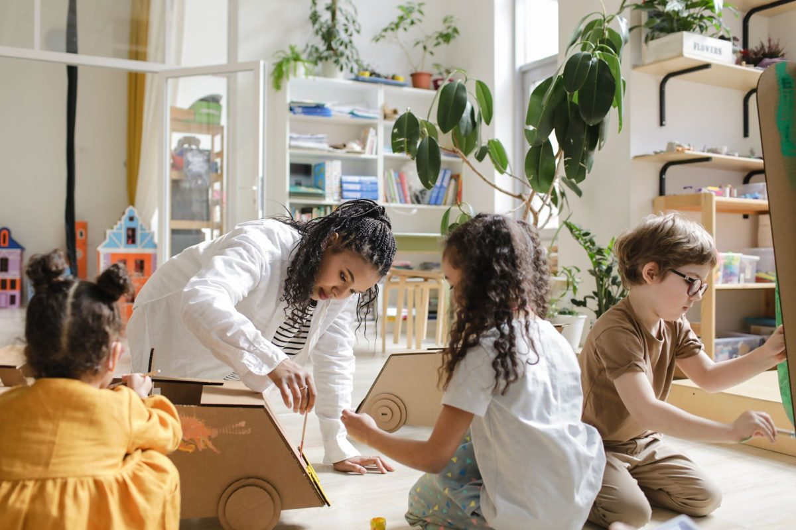
A chain reaction as big as the floor
Roll a ball down a cardboard ramp, knock the blocks, pass it to the next builder. Then fix the one link that fails and run it again for visitors.
FROM: Chain-Reaction PlaygroundMinneapolis · K–12 · Hands-on STEM
createMPLS brings robotics, coding, circuits, 3D printing, sound tech and drones right into Minneapolis schools and community spaces. Students and families pay nothing. Ever.
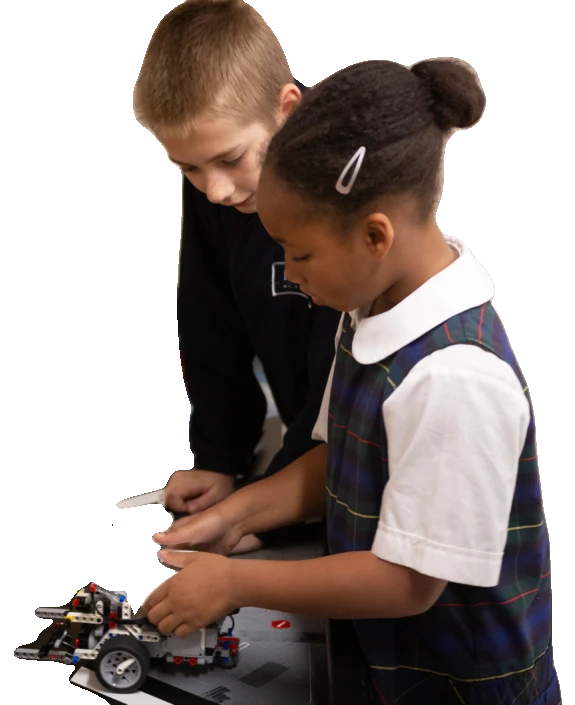
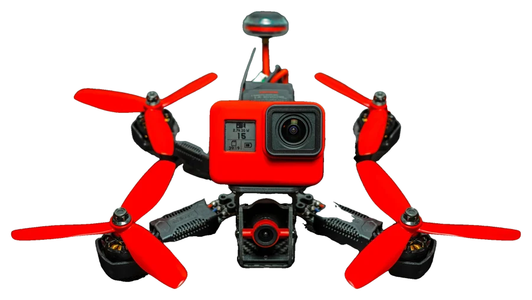
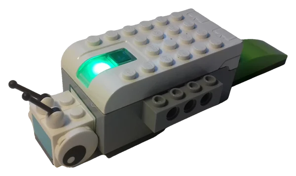
01 — How it works
No field trip, no fees, no tryouts. Our instructors set up where kids already are: the classroom, the after-school room, the summer program, the rec center. Your building joins the circuit.
Free for every student and family. No fees, no kits to buy, no bus to catch.
School-day courses, plus after-school, summer and community labs, taught in your space.
A short demo, a long build, then kids test it, change one thing, and show what they made.
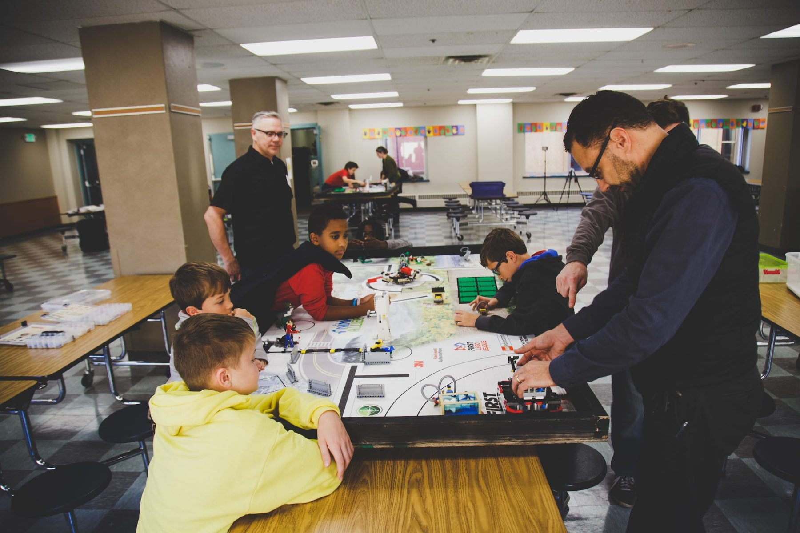
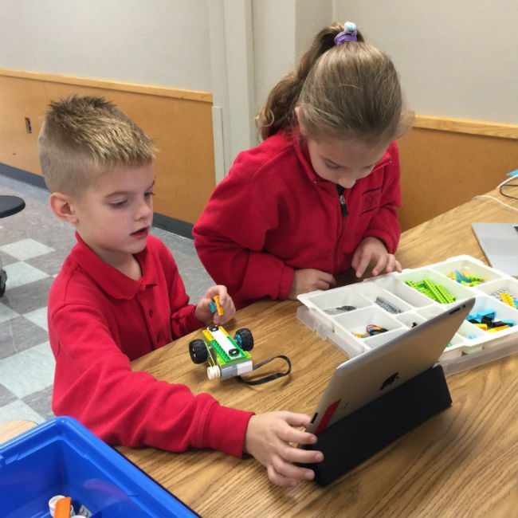
It comes to us!— a createMPLS parent
02 — What kids make
Every program ends with something real: built, tested, changed, and shown off. Tune through four of them.

Roll a ball down a cardboard ramp, knock the blocks, pass it to the next builder. Then fix the one link that fails and run it again for visitors.
FROM: Chain-Reaction Playground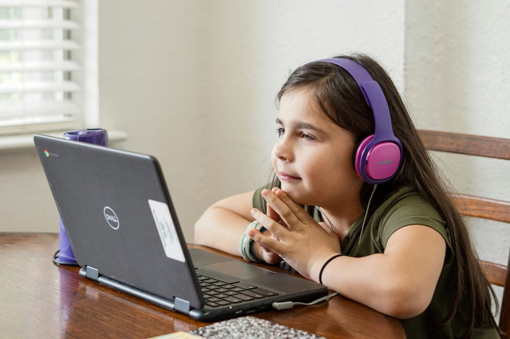
Title screen, power-ups, three stages and a final boss, all revised after real players tried it.
FROM: Scratch Arcade AdventureSimulator first. Then solder a harness, build a sub-250-gram whoop, and fly check-rides through gates.
FROM: Robotics to FPV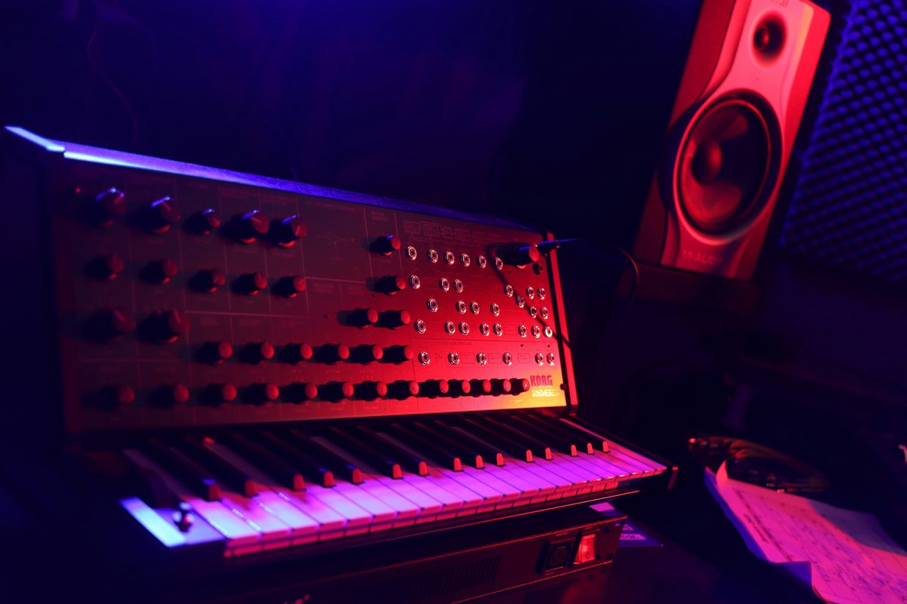
Record found sounds, chop and loop them, then re-record in a stairwell so the building itself becomes the reverb.
FROM: Lo-Fi Beat Laboratory03 — The program board
Every program we can bring to your site, laid out like a circuit board. Grades run left to right; each colored trace is a kind of making. Drag the yellow probe to a grade and see what kids there get to build.
Mixed-age teams and their grown-ups build one thing together in a single evening. All six are piloting.
45 minutes, one small make, and an easy first step toward volunteering with kids.
04 — Since 2019
Building robots, writing code, wiring circuits and flying drones in Minneapolis schools and community sites.
Total of yearly student counts, 2019–2023.05 — Get involved
Three ways to join the circuit. Schools and community sites first: that’s where the current flows.
Bring a lab to your classroom, after-school program, summer camp or community room. We bring the instructor, the gear and the plan.
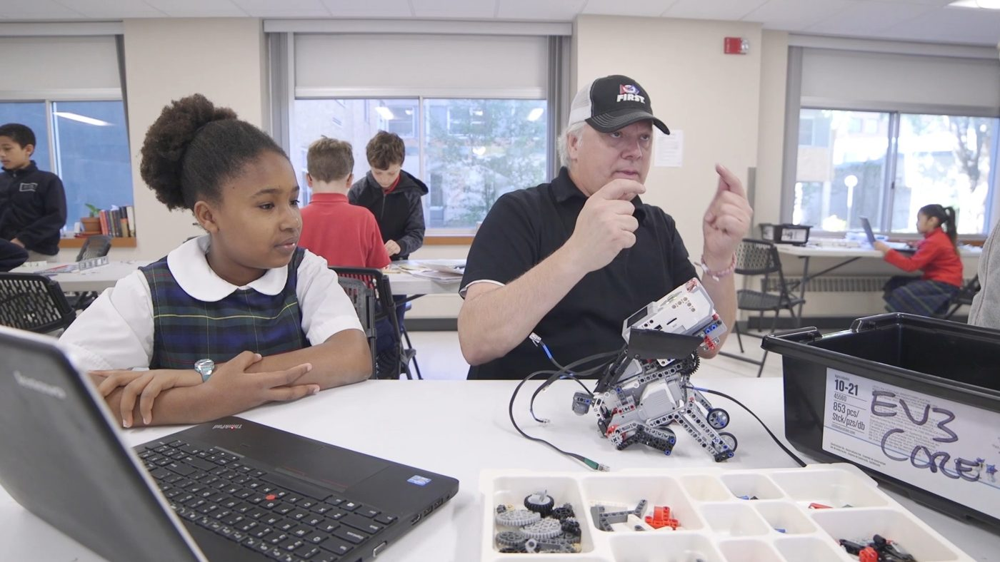
Coach a team, help at a build night, or bring your trade to a lab. Curiosity counts more than credentials.
Volunteer with us →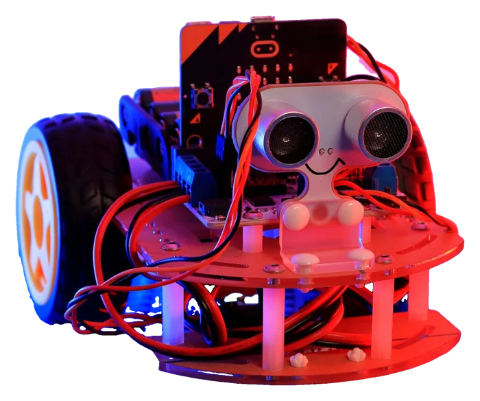
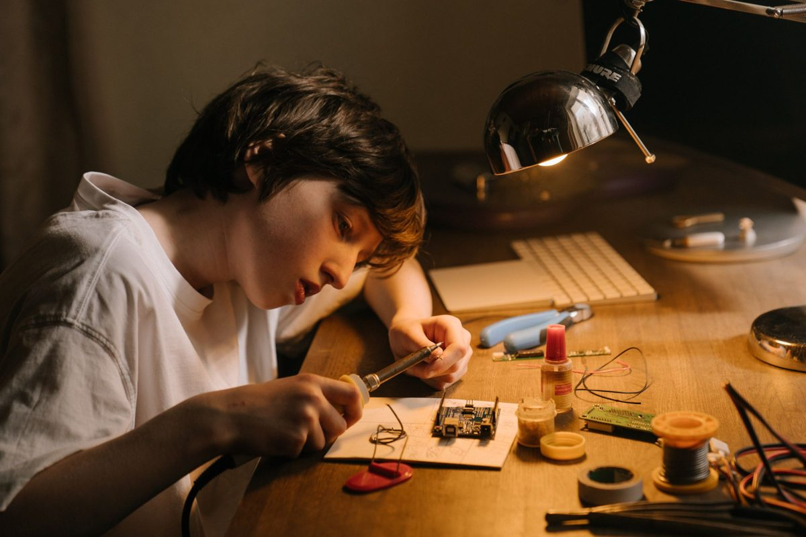
Kids bring the sparks. Your gift buys the motors, filament, batteries and instructor time that keep labs free.
Give on Givebutter →